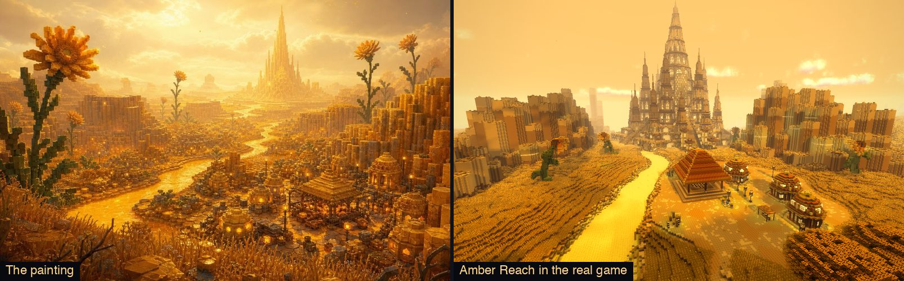
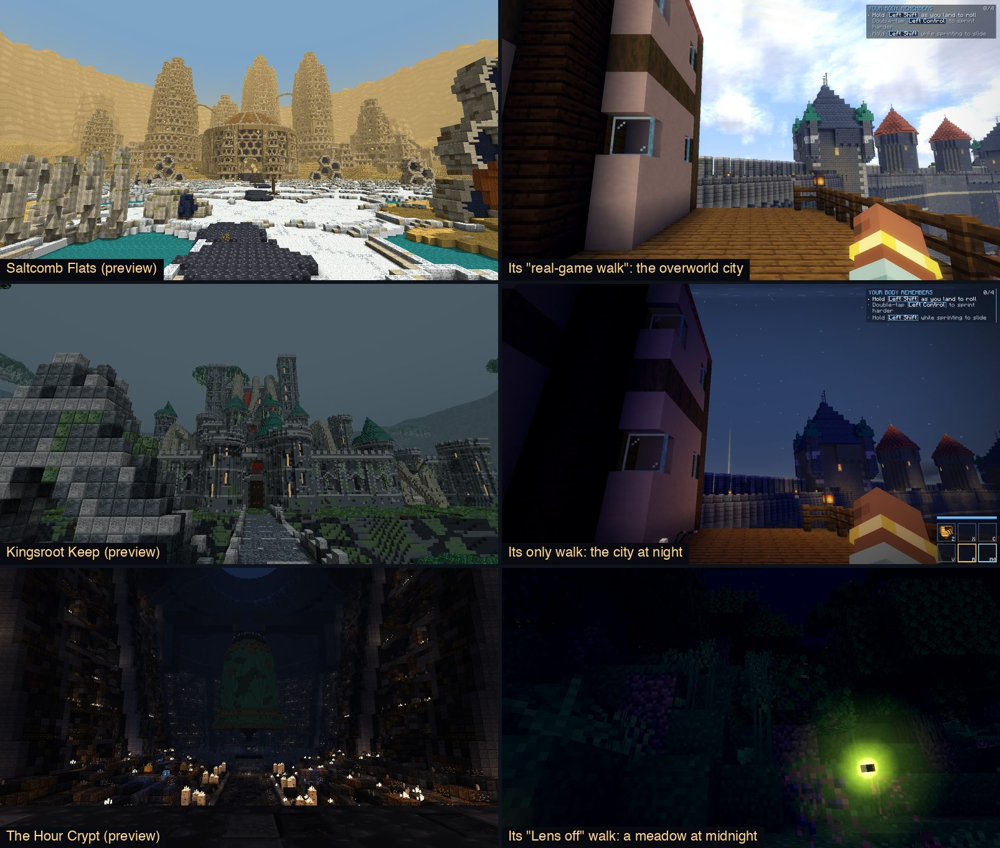
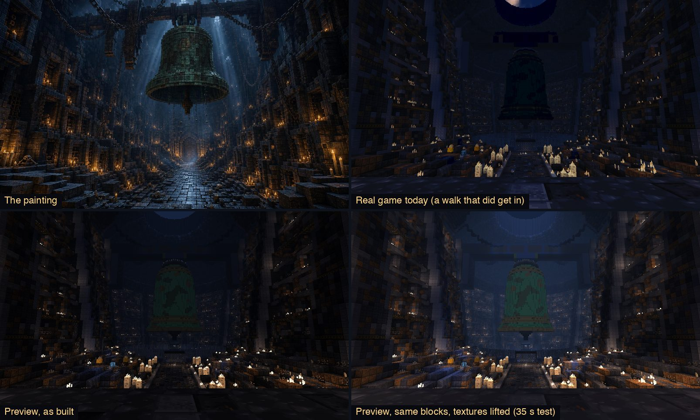
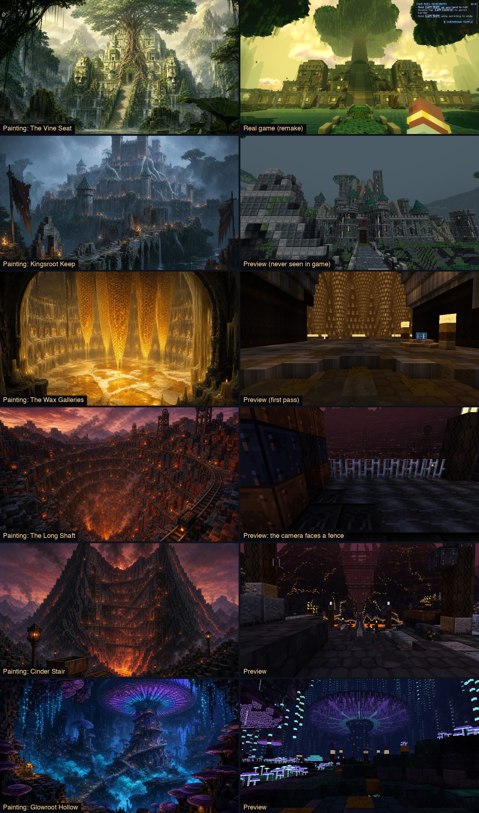

AWAKEN · Gates as Worlds · plan for approval · 10 Nov 2026
You asked me to learn what's been built and the bar it's built to, then find how to build gates faster, better, in more volume, and closer to AAA. I read the handover, the code on all three branches, every painting and every shot, and the old session's own records. Nothing here is built yet. It waits for your yes.
Build the Gate Engine, then remake The Hour Crypt at the maximum level for you to play, then you choose the level for the other 86. The engine makes depth, light and "nothing floats" come out right by construction, so a gate costs about a third of what it did and can't come out vanilla blocky because a builder ran short. The Crypt at maximum shows you the top of the range in the real game before you spend three weeks of usage on it.
Cost until you next decide: about 19% of one week's Fable allowance and about 16 hours of session time, in three stages that each end with pictures or something to play.
Look at these two first: decision 1 (which level) and decision 3 (how much of your week gates may use). They set everything else. Decision 2 is the handover's question: who merges into build/awaken-v1 now.
Part 1
Six findings. Each one is something I measured or read in the repo, and each changes what the plan should be. Where I'm guessing, it says so.

To photograph a gate, the tour makes a real gate form in the overworld and then steps in. On GitHub's slower machines the gate was often still forming, or found "no dry ground", so the tour took every shot standing in the overworld. 7 of 21 gate walks did this, and nobody caught it because the shots scrolled past as numbers.

Minecraft shows a block as its texture multiplied by the light on it. Amber's blocks are mid-toned, so light and shadow have room to work. The Crypt's family was painted as dark as the painting's shadows. Its wall stone is 22 to 38 out of 255 before any light touches it. Multiply that by candlelight a few blocks away and you get about 10. The measured middle of the real shots is 15.
Median brightness of each family's block textures, 0 to 255. Kingsroot's family is nearly as dark as the Crypt's, and it has never been seen in the game.
That also explains the handover's mystery, that adding hidden lights and an ambient floor "made no measurable difference". By the game's own light formula, lights at level 9 to 12 every 8 to 10 blocks add about a fifth of full brightness. A fifth of a texture at 38 is 8. There was nothing for the light to reveal. Two more causes sit on top: only Amber has its own Lens look, so the Crypt is graded with the default outdoor look, and most of its candles stand in ones and twos, which light only the two to five blocks around them.
A 35-second test. I ran the preview on the same blocks with the Crypt's textures lifted to Amber's range and a lighter fog. No file in the repo changed. Measured contrast went up by half to double in every shot.

From about 02:20 on 10 Nov by the Mac's clock, after you'd gone to bed, every tool call in all three sessions took exactly ten minutes to come back. A permission hook was waiting for the desktop app and timing out. The Long Shaft's "6 hours", Wax's "3 hours" and Ash Isles' "3 hours" were that. Each time a session woke, it had to re-read its whole memory at full price.
When nothing was stuck, a gate took 40 to 75 minutes. Amber took three hours because it also invented everything the others reuse.
About half of everything the two builders used went on waiting. And of the real building cost, about 60% was each step re-reading a session that had grown to 250,000 tokens. Each builder also ran the float and reach tests 13 to 16 times per gate, chasing floating blocks one coordinate list at a time.
The paintings were used as a mood, not as a plan. Nobody fixed where the painter stood, so the "painting" shot of The Long Shaft faces a fence and Cinder Stair's shows a hall, when its painting is a volcano seen from outside.

Part 2
| Strong | From where you arrive, the real-game shot and the painting read as the same place: the same great thing, colours and light. Nothing within twenty blocks is a flat cube face. It moves and it sounds like somewhere. You can walk to everything and nothing floats. Built in under 45 minutes for about 1% of a week. |
|---|---|
| Weak | Right layout, flat faces, even light, empty air. The first Vine Seat. |
| Never | Anything floating. A blocked route. A room you can't see in. A gate that feels like another gate. A check counted as done when it never ran. |
Numbers I'd hold every gate to: indoor shots in the real game with a middle brightness of 45 to 90 and something over 200 in every view. Texture families between 95 and 150, no wall block under 60. No preview flags. Two real walks at most. Usage written down per gate, read from the meter before and after.
Not in this plan: combat, XP numbers (already approved), Far Sight in gates, and the three to five great creatures per land. Creatures are a track of their own and I haven't priced them here.
Part 3
One unit throughout: a share of this account's weekly Fable allowance. Today the meter read 5% after about 5.3 million weighted tokens, so I price one point of a week at about a million. That could be a third off either way. Hours are session hours at this project's real pace, taken from the commit times above.
| A. Tighten | B. The Gate Engine | C. Maximum | |
|---|---|---|---|
| What it is | Keep building each gate by hand. Fix what leaked: the stall, the walks, dark textures, a Lens look per gate, a fresh small session per gate. | Everything in A, plus tools that make quality come out by construction: a wall grammar, supports so nothing can float, light by rule with a true-light preview, the painting as the plan, one spec file per gate. | Everything in B, plus what cubes can't do: shapes smaller than a block, things that move, a built Lord's arena that changes during the fight, sound and arrival made for each gate. |
| One-off tooling | 2% · 2 h | 10% · 10 h | 25% · 22 h |
| Each new gate | about 2% · 50–70 min | 1–1.5% · 35–45 min | 2.5–4% · 1.5–2 h |
| Finish the E wave 3 new, 3 rebuilt, 7 finished | 20% | 21% | 54% |
| All 88 | 1.7 weeks' allowance · 85 h | 1.15 weeks' · 65 h | 2.9 weeks' · 170 h |
| Your Mac | 15–20 min in the queue per gate | Seconds per check | Seconds per check, plus a few frame-rate tours |
| GitHub's machines | Two walks per gate at about 12 minutes each, several at once, free because the repo is public. About 35 hours of runner time for all 88. | ||
| What it risks | Quality still depends on a builder's stamina, wall by wall. When a session runs short, flat walls come back. That happened on four of eleven gates. | Ten hours before a new gate appears. Gates could start to look alike if the grammar does too much, so the great build of each gate stays hand-made and a test fails two gates that share a style. | Frame rate. You get 40 to 55 on Cinematic today, and new shapes and moving parts cost frames. Three weeks of allowance is a lot to commit before you've seen one. |
| Evidence | The measured costs above. Fresh small sessions cut the re-reading that was 60% of the bill. | The Crypt's walls, straight and round, already come from one function. The kit was pulled out of Amber without moving a single block (same hash on three seeds). The preview runs in 35 seconds. | The paintings' forms are smaller than a block. No amount of effort with cubes reaches them. 26.3 has the moving display entities this needs (checked in the game's source). |
B costs the same as A for the E wave and pulls ahead from about the fifteenth gate. By 88 it has saved about a third, and the worst gate is much better because flat walls and floating blocks can't be produced.
It may well be the right level. I can't show it to you without building it, and it is where the frame-rate risk lives. So the recommendation builds B, then spends about 8% of a week on one gate at C, and you judge it by playing.
Part 4
Today. Red boxes are where time, usage or quality was lost.
With the engine. Green boxes are new.
A third of walks photographed the wrong place and the preview had no honest light.
A command that puts the tour straight inside a gate. The walk stops at once if it isn't in a Realm, hides the HUD and hand, and always quits. The preview uses the game's own light formula and each gate's own ambient light. A test reads the real light in every room and fails dark ones.
Proof: the same shot from preview and game side by side for the Crypt.
The Crypt and the Keep were painted dark, then lit dark.
The texture maker refuses a family outside Amber's range. Light is placed by rule: strong where a pool belongs, real openings to the sky for shafts, an ambient floor per gate. Every gate gets its own Lens look made from its painting's colours, and the build fails without one.
Changes: Knell and Keep are re-toned. Amber's blocks don't move.
The bar's rule, no flat face wider than five blocks, is met by hand and skipped when a session runs short.
Any wall, straight, round or stepped, gets its plinth, pilasters, recessed panels, cornice, niches and lamps on a rhythm. So do vaults, arcades, galleries, buttresses and stairs. Each theme gets its own style, and a test fails two gates with the same one. The great build stays hand-made.
Trade-off: less freedom on ordinary walls. That's the point.
Saltcomb's first test found 76 floating blocks. Ash Isles had 893.
Every piece says what holds it up. Carving can't cut a support. Plants and lamps only land on real ground. A last pass foots or removes strays and lists them by piece. The float test stays as the proof, and should pass first time.
Builds drifted from their paintings because nothing tied them together.
Before any code: where the painter stood becomes the arrival camera, five colours become the materials, fog, sky and light, and the layers become a checklist. Every round I look at the painting, the preview and the game shot at full size and write down the five biggest gaps.
A gate touches 12 shared files and about 250 generated ones.
One file per gate produces the blueprint, biomes, tour, tests, text and roster rows. Each gate registers itself. Merges stop colliding, and builders can work side by side if you ever want that.
Each check is a Gradle run in the Mac's queue: 35 seconds for pictures, a minute or more for tests.
One process stays running. On each edit it repaints the gate, checks floats, reach and light, and writes the picture sheet.
Half the builders' usage went on a stuck hook, and 60% of the rest on re-reading a huge session.
One fresh session per gate, opened with a short bar pack: the two bar sheets, the gate's painting and the engine's cheat sheet. Keep-awake on for long runs. A builder that sees a step take ten minutes stops and says so.
The Wonders work shares this bar and hit the same wall (dark, flat, blocky in game). The straight-in walk, the true-light preview, the texture rule, the Lens look from a painting, the three-picture sheet, the wall grammar and the new shapes all apply there unchanged. I've left a note for that session.
Part 5
| Stage | What gets built | Cost | It passes when | You get |
|---|---|---|---|---|
| 0. See truly | The stall guard, the straight-in walk, true light in the preview, the lit-rooms test, the texture rule. Knell and Keep re-toned. A Lens look and the right sounds for the five main-line gates. | 3% · 3 h | All five gates walked in the real game, every shot inside the gate. The Crypt's middle brightness between 45 and 90 with bright pools. | Real shots of five gates beside their paintings. Four of them for the first time. |
| 1. The engine | Grammar, supports, spec files, bench, painting-as-plan. Proven by rebuilding The Wax Galleries from scratch and moving The Vine Seat's flat rooms onto the grammar. | 8% · 8 h | Amber's three hashes unchanged. Wax built in under 45 minutes for under 1.5%, floats test green on the first run, no preview flags. | Both gates beside their paintings, with the measured time and usage. |
| 2. One gate at maximum | The Hour Crypt with new shapes, the bell swinging on its toll, its Lord's floor as a real arena, its own sound. One frame-rate tour on your Mac, if you allow it. | 8% · 5 h | Frame rate within 10% of the same gate without the extras. | The Crypt to play. Then you choose the level for the rest. |
| 3. The E wave | Quiet Barrow, Flooded Ossuary, Broodwarren new. Long Shaft and Ash Isles rebuilt. Glowroot, Sporefall, Cinder Stair, Kingsroot, Saltcomb finished and walked. | 11% at B 29% at C | Every gate passes the bar above. The whole test suite is green on CI. | Fourteen gates ready to switch on. |
| 4 on. D to S | The D wave's 16 with four new themes, then C to S, wave by wave. | 1–1.5% a gate at B 2.5–4% at C | Same bar, and any two gates differ on four of six axes. | Shots in batches. You veto what you don't like. |
Pace follows your share. At a quarter of a week for gates, level B is about 20 gates a week and all 88 land in about five weeks. Level C is 7 or 8 a week and about ten weeks.
Undoing it. New gates stay behind the gateRealms switch, off by default. The old hand-built way keeps working until the engine has passed stage 1. If the engine's first two gates don't cost less and look better than hand-built ones, I stop and we stay at A. If the Crypt at maximum costs frames or you can't see the difference, we stay at B.
Part 6
My pick is marked on each. Change any you like, then copy the answers into the chat. A plain "yes to all" works too.
On the old account only the orchestrator did. I never push build either way.
Two per gate at most. They never touch your Mac. Frame-rate tours on your Mac I'd still ask for one by one.
Wax Galleries, Long Shaft and Ash Isles are first passes. Builder B also left five edited files uncommitted.